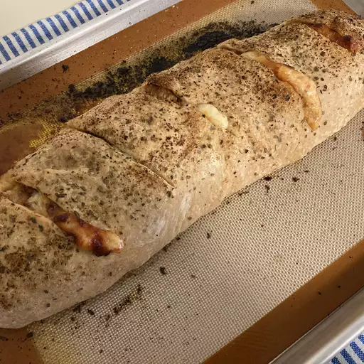

Stromboli

Description
This is the recipe on how to make stromboli.
Ingredients
- 1 (10oz) package of pizza crust dough
- 1/2 pound lean ground beef
- 1 (14oz) jar pizza sauce
- 1 cup cooked ham, diced
- 1 medium green bell pepper, chopped
- 1 medium red onion, finely chopped
- 1 (4.5oz) can mushrooms, drained
- 1 (8oz) package sliced pepperoni
- 1 cup shredded mozzarella cheese
- 1/4 cup butter, melted
Steps
- Preheat the oven to 400 degrees F.
- Cook and stir ground beef in a skilled over medium heat until
browned and crumbly, 5 to 7 minutes. Drain and discard grease.
Remove from the heat; stir in pizza sauce, ham, bell pepper, onion,
and mushrooms until well combined.
- Roll dough on a lightly floured surface into a large square;
transfer to a rimmed baking sheet. Arrage pepperoni over the lower
half of the square, then spoon desired amount of sauce over pepperoni.
Sprinkle mozzarella over sauce, then fold top half of dough down over
fillings; pinch the edges together to seal. Poke holes in the dough
and brush with melted butter. If you have remaining sauce, reserve in
for another use.
- Bake in the preheated oven until golden brown, about 30 minutes.
Remove from the oven and cut into four pieces.